MC_MoveAbsolute
Commands a controlled motion to a specified absolute
position.
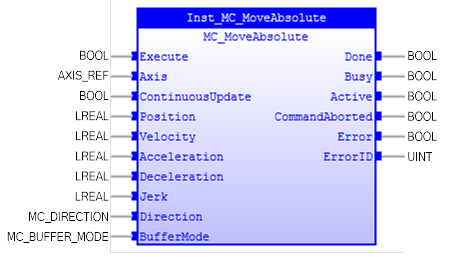
Description:
MC_MoveAbsolute commands a controlled motion to a specified
absolute position. This action completes with velocity zero if no further
actions are pending.
If the command is aborted, the untraveled distance will be
abandoned.
If input ‘Velocity’ is set to zero, FB will report an error.
If input ‘Acceleration’, ‘Deceleration’, and ‘Jerk’ are
zero, these values will be set to maximum value.
Input parameter ‘Jerk’ can be used to accelerate or
decelerate smoothly.
The following figure demonstrates the
chronological sequence of 3 different ‘BufferMode’ setup on 2 MC_MoveAbsolute
connection:
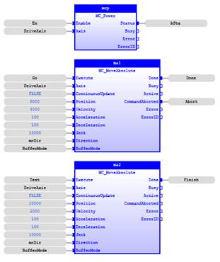
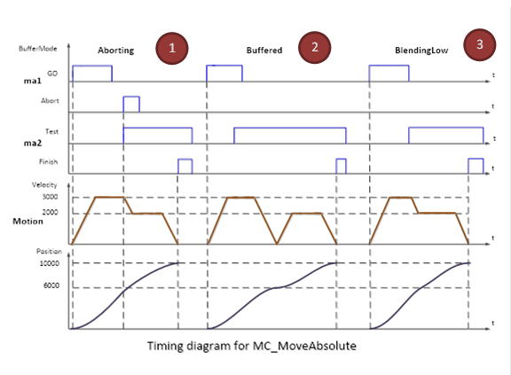
-
‘BufferMode’
= mcAborting: the left part of timing diagram illustrates the case if the 2nd
move FB starts the execution while the 1st one is still executing. In this case
the 1
st motion is interrupted and aborted by the ‘Test’ signal
during the constant velocity of the 1
st FB. The 2
nd FB
moves directly to position 10000 although the position of 6000 is not yet
reached.
-
‘BufferMode’
= mcBuffered: the middle part of the timing diagram illustrates the case if the
2
nd move FB starts the execution while the 1
st one is
still executing. In this case, the 1
st motion will not be interrupted.
The 2
nd motion should be waiting for execution until the 1
st
motion completed the position 6000 with velocity zero.
-
‘BufferMode’
= BlendingLow: the right part of the timing diagram illustrates the case if the
2
nd move FB starts the execution while the 1
st one is
still executing. In this case, the 1
st motion will not be
interrupted. The 2
nd motion should be waiting for execution until
the 1st motion completed the position 6000 with special velocity 2000.
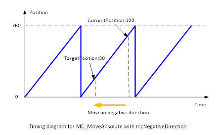
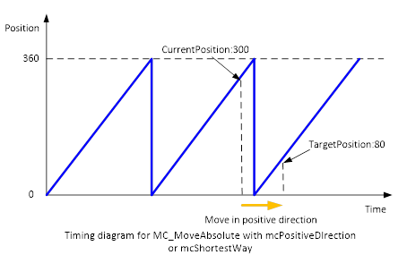
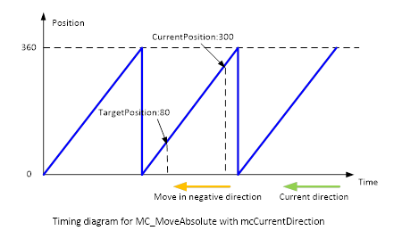
Make sure the input and output parameters are of data type
indicated in the table below.
If there is only one mathematical solution to reach the Commanded
'Position' (as in linear systems), the value of the input ‘Direction’ is
ignored.
For modulo axis, valid absolute position values are in the range
of [0 … 360] (360 is excluded), or corresponding range. The application however
may shift the Commanded 'Position' of MC_MoveAbsolute into the corresponding
modulo range.
The Enumerated type ‘mcShortestWay’ is focused on a trajectory
which will go through the shortest route. The decision of which direction to go
is based on the current position where the command is issued.
MC_MoveAbsolute can be executed when the axis state is
‘Synchronized Motion’, ‘Discrete Motion’, ‘Continuous Motion’, or ‘Standstill’.
Otherwise, it will generate an error.
Inputs/Outputs:
|
Name
|
Data Type
|
Description
|
|
INPUTS
|
|
Execute
|
BOOL
|
Start the motion at the rising edge
|
|
Axis
|
AXIS_REF
|
Reference to the axis
|
|
ContinuousUpdate
|
BOOL
|
TRUE: when the function block is
triggered (rising ‘Execute’), it will - as long as it stays TRUE – make the
function block use the current values of the input variables and apply it to
the ongoing movement.
FALSE: with the rising edge of the
‘Execute’ input, a change in the input parameters is ignored during the whole
movement.
|
|
Position
|
LREAL
|
Commanded ‘Position’ for the motion
(negative or positive)
|
|
Velocity
|
LREAL
|
Value of the maximum ‘Velocity’ (not
necessarily reached)
|
|
Acceleration
|
LREAL
|
Value of the ‘Acceleration’ (always
positive) (increasing energy of the motor)
|
|
Deceleration
|
LREAL
|
Value of the ‘Deceleration’ (always positive)
(decreasing energy of the motor)
|
|
Jerk
|
LREAL
|
Value of the ‘Jerk’ (always
positive)
|
|
Direction
|
MC_DIRECTION
|
Enumerated type:
0: mcPositiveDirection
1: mcShortestWay
2: mcNegativeDirection
3: mcCurrentDirection
|
|
BufferMode
|
MC_BUFFER_MODE
|
Enumerated type:
0: mcAborting
1: mcBuffered
2: mcBlendingLow
3: mcBlendingPrevious
4: mcBlendingNext
5: mcBlendingHigh
|
|
OUTPUTS
|
|
Done
|
BOOL
|
Commanded position finally reached
|
|
Busy
|
BOOL
|
The FB is not finished and new output
value is to be expected
|
|
Active
|
BOOL
|
Indicates that the FB has control on the
axis
|
|
CommandAborted
|
BOOL
|
‘Command’ is aborted by another command
|
|
Error
|
BOOL
|
Signals that an error has occurredwithin
the FunctionBlock
|
|
ErrorID
|
WORD
|
Error identification
|
Examples:
Example 1:
|
 Example
Example
|
|
(* Example for
MC_MoveAbsolute in ST *)
Inst_MC_MoveAbsolute( Axis := Axis0Ref,
Execute
:= bExecute,
ContinuousUpdate
:= bContinuousUpdate,
Position
:=
LREAL#1000.0
,
Velocity
:=
LREAL#100.0
,
Acceleration
:=
LREAL#1000.0
,
Deceleration
:=
LREAL#1000.0
,
Jerk
:=
LREAL#100000
,
Direction
:= mcPositiveDirection,
Buffermode
:= mcBuffered );
bDone := Inst_MC_MoveAbsolute.Done;
bBusy := Inst_MC_MoveAbsolute.Busy;
bActive := Inst_MC_MoveAbsolute.Active;
bCommAborted := Inst_MC_MoveAbsolute.CommandAborted;
bError := Inst_MC_MoveAbsolute.Error;
ErrorId := Inst_MC_MoveAbsolute.ErrorID;
(* Example for
MC_MoveAbsolute in LD *)
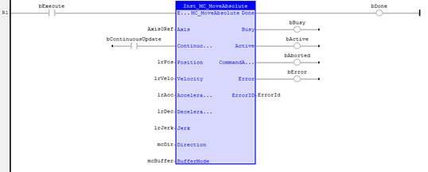
(* Example for
MC_MoveAbsolute in FBD*)
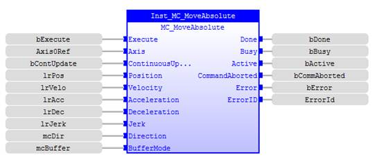
|
Example 2:
A
feed
shaft must move to 1 of 3 positions depending on the selection made by 1 home
switch and 2 switches controlled by electronic cam. The options are home (1000mm),
position 1 (2000mm), and position 2 (3000mm) where home switch on, the first
switch on and the second switch on respectively. Home has priority over
position 2, and position 2 has priority over position 1.
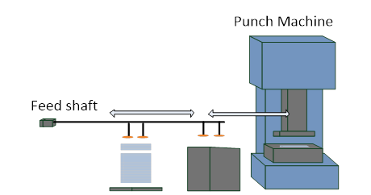
|
Example
|
|
VAR
Inst_MC_Power :
MC_Power
;
refAxisFeedshaft :
lib:AXIS_REF
;
(*$desc=Axis reference for feed shaft*)
bPower :
BOOL
:=
FALSE
;
(*$desc=Feed shaft axis enable variable which is bound to IN2*)
(*$profile=IO*)
(*$embed=(VERS=1 MODE=0 POINT=2)*)
bPowerOn :
BOOL
:=
FALSE
;
(*$desc=Feed shaft axis power status*)
Inst_MC_ReadDigitalInput :
MC_ReadDigitalInput
;
Inst_MC_ReadDigitalInput1 :
MC_ReadDigitalInput
;
Inst_MC_ReadDigitalInput2 :
MC_ReadDigitalInput
;
bReadInputs :
BOOL
:=
FALSE
;
(*$desc=Enable to read inputs for position selection*)
HomSw :
INT
:=
INT#5
;
(*$desc=Home switch channel number*)
PositionSW1 :
INT
:=
INT#6
;
(*$desc=Position 1 selection channel number*)
PositionSW2 :
INT
:=
INT#7
;
(*$desc=Position 2 selection channel number*)
Axis2Slave :
lib:AXIS_REF
;
(*$desc=Slave axis in MC_CamIn which moving in constant
velocity*)
PosSelect :
DINT
:=
DINT#0
;
(*$desc=Position selection*)
lastPosSelect :
DINT
;
Inst_MC_MoveAbsolute :
MC_MoveAbsolute
;
mDir :
MC_DIRECTION
:= mcPositiveDirection ;
mBufferMode :
MC_BUFFER_MODE
:= mcAborting ;
bDone :
BOOL
:=
FALSE
;
(*$desc=Positioning finished status*)
bAbort :
BOOL
:=
FALSE
;
(*$desc=MC_MoveAbsolute aborted status*)
END_VAR
|
|
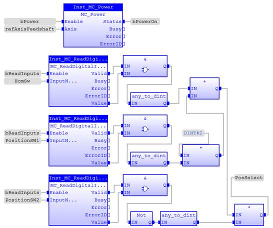
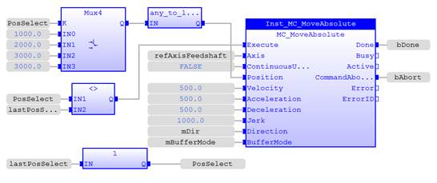
|
Example 3:
Move Axis 0 to position 1000 with speed of 10, accel/decel
of 100, jerk 1000, positive direction. After that, move 1000 units from that
point with the same speed, accel/decel, and jerk setup as before.
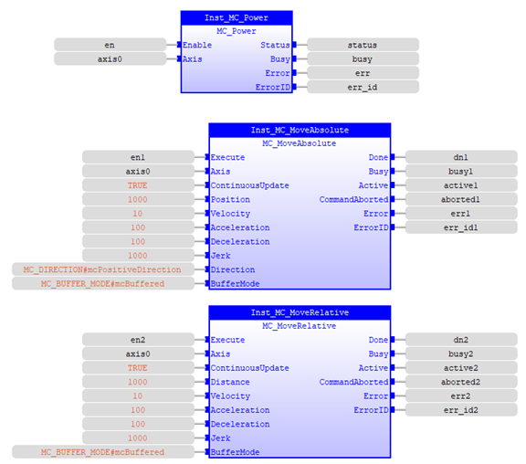
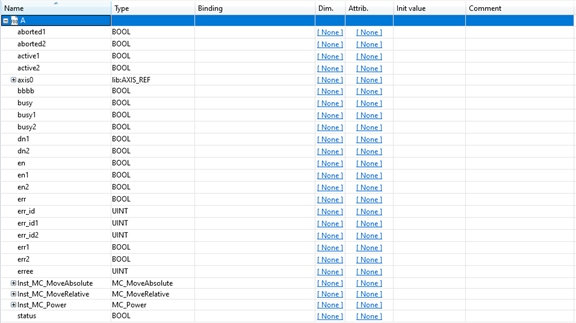
Note: MC_Power enables axis 0 and switch Master Enable (WDOG) ON
See also: